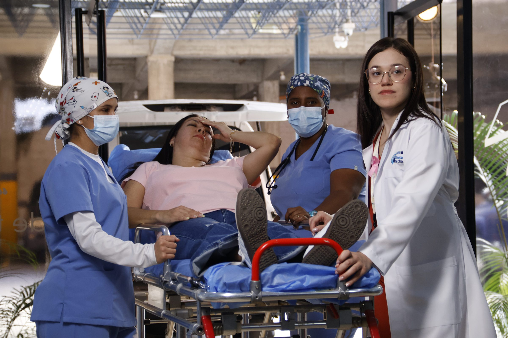

Urgency
Spot 1 · Emergency entrance
The call, the façade and reception, then the stretcher and the team moving at once. Fifteen seconds from fear to relief.

Commercial · Clínica Piedra Azul
Caring from afar is also being there.
Synopsis
A campaign for Clínica Piedra Azul about the Venezuelans who live abroad and look after their families back home. Two 15-second spots, Urgency and Prevention: a call that can't wait, and a check-up planned from miles away.
2 films · Tap to watch
Two scripts, one day at the clinic
Spot 1 · Emergency entrance
The call, the façade and reception, then the stretcher and the team moving at once. Fifteen seconds from fear to relief.
Spot 2 · Consulting room
The calm version of the same promise: a reminder, a specialist who takes his time, and a video call that closes the distance.
On location at Clínica Piedra Azul
Shot across the clinic itself: the ambulance bay, emergency, consulting rooms and hospital rooms.
“Caring from afar is also being there.”
Clínica Piedra Azul · Closing line
Full credits
Tap any frame to view it full screen

Next · Commercial